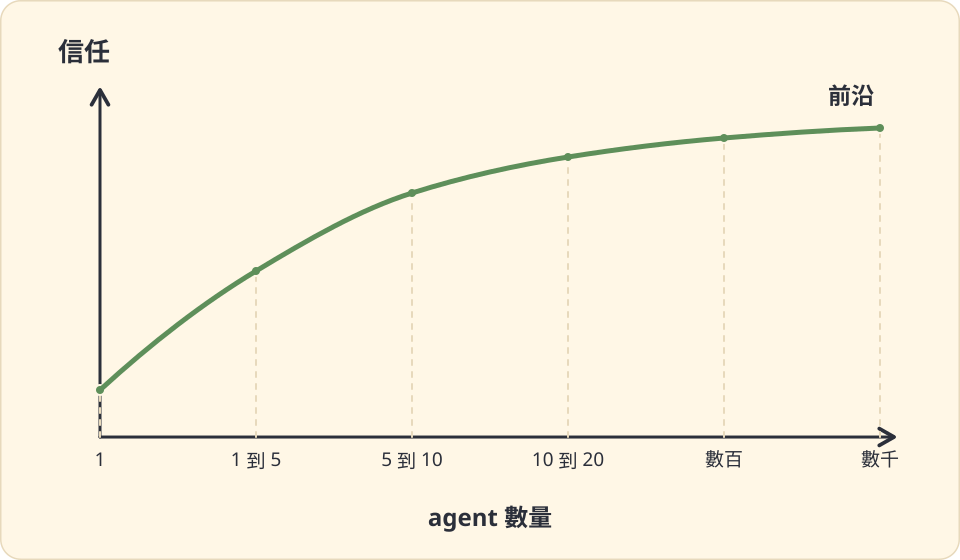
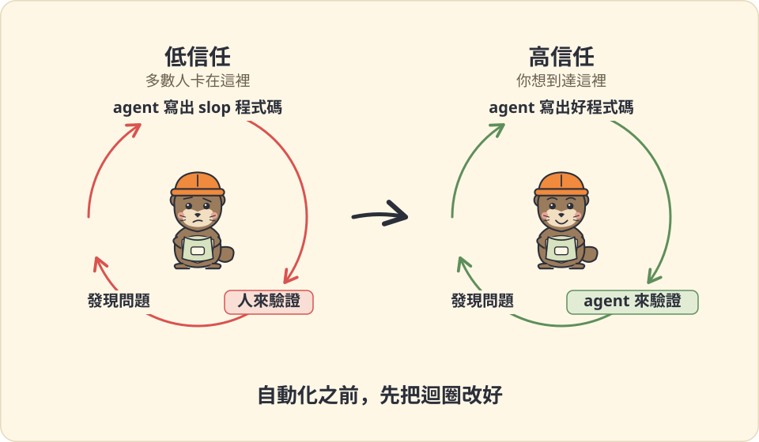
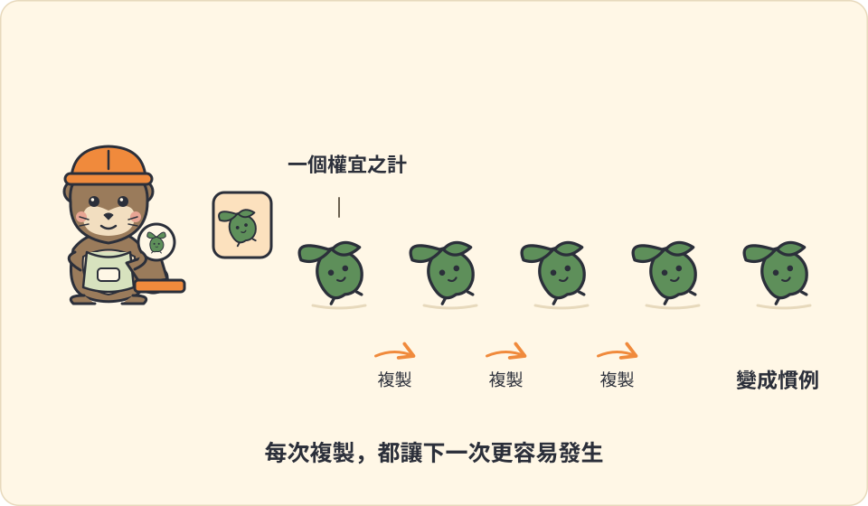
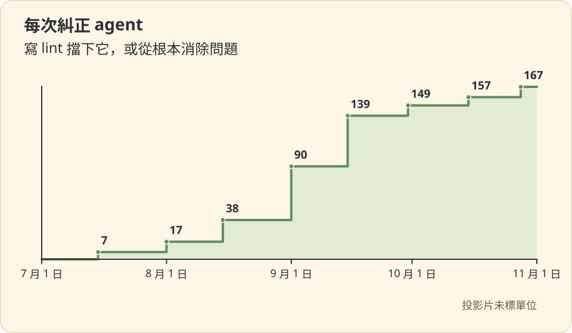
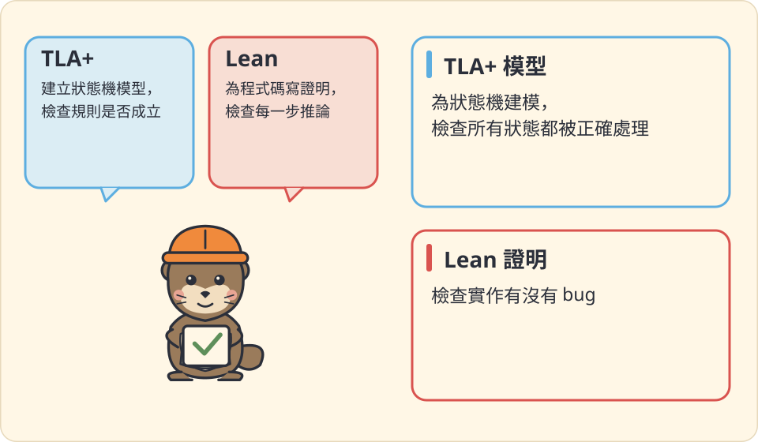
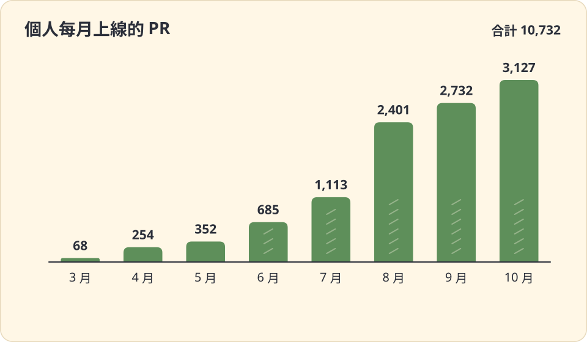
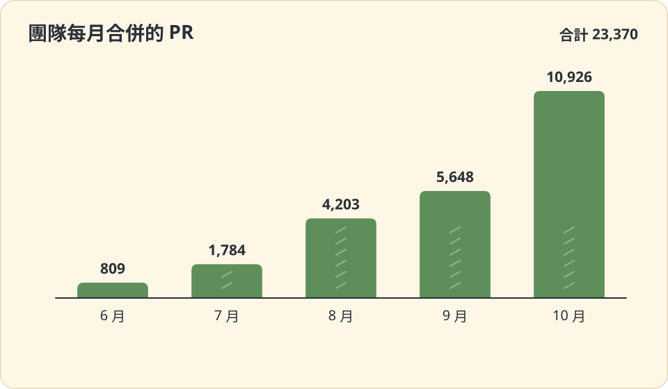
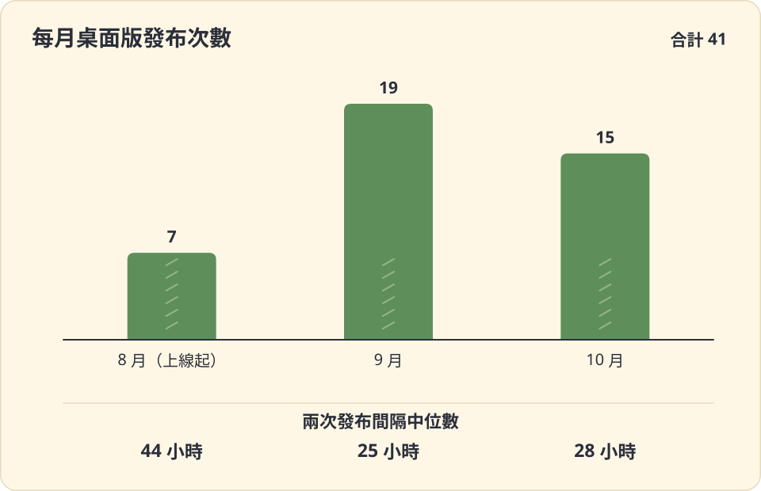
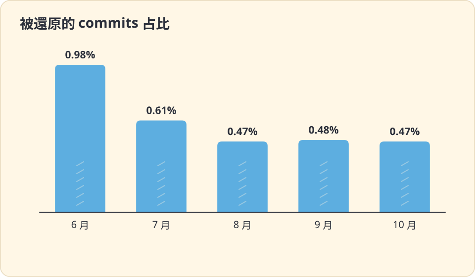

先看全貌：把糾正留在環境裡，才接得住增加的產量

產量放大之後，工程師仍得守住品質
影片第 1 章，0:00–2:03。Lauren 拿嫌棄別人程式碼是 slop 的心態開玩笑，隨即把題目拉回自己的工作。她回憶，以前公司會把極高產的工程師稱為 coding machine；她轉述 Bret Taylor 一個週末重寫 Google Maps 的軼事二手，用來襯托 agent 讓更多人有機會成為「寫程式機器」（0:58）。
產量門檻變了，工程師的責任還在。她的主張是「在大幅提升生產力的同時，找出如何維持甚至改善程式碼品質的方法」（1:13）。有人稱這種工作方式為 software factory，她則從信任談起：要投入時間改善 agent 的環境，才有理由相信它會做對。
這份信任有養成過程。她自述花了六個月講者，才走到能交付數千個 PR、其中許多在睡覺時完成的狀態（1:40）。她認為這條路走得通，聽眾也有機會少走些彎路；接下來的經驗，就是她為這份信任付出的工作。
信任要從程式碼庫養起，壞模式也會跟著長大
影片第 2 章，2:03–5:00。Lauren 把前兩層稱為確定性的約束：API、架構與重構決定能怎麼寫，lint、型別、編譯器與測試限制哪些寫法能留下。再疊上執行期與形式驗證，檢查系統屬性及 agent 是否理解意圖；需要判斷的部分，才交給 rules、skills、AGENTS.md（2:09）。

她回憶 2024 年上班時審同事的 3 個 PR，如今更像是 300 個講者。她用花園比喻程式碼庫：新程式碼長得愈快，架構與約束這些地基愈重要。投影片的「code is memory」點出原因：既有程式碼是 agent 最大的輸入來源之一，寫進程式碼的糾正，也更能重現。

壞模式也會被複製。她提醒，一個權宜之計留在庫裡，下一個 agent 就可能把它當成慣例；複製愈多，愈像理所當然（4:26）。她因此要求把程式碼庫整理乾淨，並在投影片提醒：有時仍該親自讀程式碼畫面。

Dune 把容易走錯的路，直接擋在架構裡

影片第 3 章，5:00–6:56。Lauren 介紹團隊為 Grok Bot 建立的客戶端框架 Dune，形容它大概像 Electron 應用程式的 Next.js講者。她關心的是裡面編入了哪些教訓；投影片列出一個資料夾對應一個功能、嚴格禁止匯入、程式碼不留註解三項約束（5:00）。
useEffect 是她的例子。她承認它有適用情境，但用好需要細微判斷，agent 又常誤用。因此她的團隊禁止產品程式碼使用 useEffect，只在 Dune API 內部少數地方開放。依她的經驗，這讓審查時不必再反覆抓同一類問題（5:52）。
她說他們在 Cursor 上看到，這個 Electron 應用程式裡，agent 常把 main 程式碼 import 進 renderer，造成長任務與卡頓講者。她的團隊於是在 Grok Bot／Dune 用明確命名的目錄提供脈絡，再由相依圖分析器和 lint 規則禁止互相匯入（6:15）。投影片連型別都劃進禁令；邊界一旦能強制執行，就少一件需要人記住的審查工作。
把註解換成會擋錯的規則，糾正才會留下來
影片第 4 章，6:56–9:40。Lauren 觀察到，agent 會把 Markdown 文件、註解、rules 和 skills 當成替捷徑辯解的地方，也可能把一次小修正誇大成永久禁令。寫得愈多，不一定愈可靠。
她說他們在 Cursor 上看到的計時器問題很具體：agent 用 setTimeout、requestAnimationFrame、requestIdleCallback 快速修補，掩蓋 VS Code 命令式風格與 React 宣告式風格的衝突。她指出，大量計時器反覆建立、銷毀造成垃圾回收與卡頓；註解又替這些寫法辯護，讓問題繼續蔓延（7:24）。

她的團隊在 Grok Bot 決定禁用 99% 的註解講者，投影片呈現 65,824→1,227畫面。她最在意的是註解無法強制執行；團隊改用 lint 規則，錯誤訊息還要指向根因，要求 agent 修真正的問題（8:22）。

她把原則推到審查工作上：糾正變成確定性檢查，或由 API 與架構消除整類問題，需要留意的事情就會減少。她描繪的終點，是某天發現已沒什麼需要再審，能讓 agent 自行合併大部分 PR（9:30）。
讓 agent 實際操作程式，審查就有成果可看

影片第 5 章，9:40–10:50。Lauren 接著交代審查怎麼縮小：她的團隊主要改看驗證產物，包括影片、截圖、圖表與形式驗證（9:50）。人仍要判斷成果，只是眼前多了程式實際運作的證據。
執行期驗證在她的說明裡很直接：讓 agent 自己跑程式，也能使用 Chrome DevTools Protocol 等開發者的除錯工具。能操作還不夠，它得知道要去哪裡。團隊因此在 skill 裡放入功能地圖，從使用者角度列出有哪些功能，以及如何到達。
這張地圖提供共通詞彙。當人提到「左側邊欄的那個小東西」，agent 就比較不必瞎猜指的是哪裡（10:29）。她的團隊還把自製 CLI 與 driver 放進 skills，讓操作方式能重複使用；她認為這既減少 token 消耗，也讓工具本身可以測試。從找功能到留下驗證產物，agent 因而有一條可反覆走的路。
形式驗證讓狀態與演算法多一層檢查

token 大多花在驗證，才有條件相信產生的程式碼
影片第 7 章，11:51–13:32。Lauren 引用 Cindy Sridharan 的兩則推文：2026-05-15 那則談到帶著細微 bug 的 AI PR 被合併，後續得花力氣人工修補；到了後一則，重點轉為補齊驗證流程畫面。
也就是每天約七成 token 用在驗證修補，只有約兩至三成用在產生。Lauren 認為這符合自己的觀察：她大部分 token 也花在驗證上（12:15）。
她接著指出，這些技術過去就存在，只是理解、撰寫與維護的成本可能高到難以採用。agent 降低了成本，讓更深入的測試變得划算；她因此認為軟體測試與驗證正在進入黃金時代（12:30）。
驗證也能用來確認產品意圖。她介紹 pstack 裡的 statechart skill一手，把使用者眼中的狀態機畫出來，搭配影片與截圖，讓審查更容易（13:02）。在她的工作裡，驗證產物開始成為理解變更的入口。
PR 增加時，她也把發布節奏與還原率攤開來看
影片第 8 章，13:32–15:11。Lauren 展示團隊投入之後的成果：10 月合併 10,926 個 PR，6–10 月合計 23,370畫面；她以約 11,000 個 PR 描述上月交付量（13:37）。個人曲線與團隊曲線放在一起，呈現她所說的產量變化。


客戶端發布也跟著加快：8、9、10 月分別發布 7、19、15 次畫面。她形容大約每天有一個穩定版，並提到 10 月約有 227 人至少貢獻一個 PR講者；其中包括未必掌握很多背景的臨時貢獻者。


她用還原率回應「這難道不會變成一堆 slop 嗎？」的疑問，形容比例穩定在約 0.5%講者（14:21）。她接著談效能：相較剛推出時，啟動、輸入、開新對話與切換對話都變快了；對一個交付速度這麼高、參與人數這麼多的 Electron 應用程式，她認為這樣的表現「相當不錯」。
先讓內圈可靠，再替它接上自動觸發
影片第 9 章，15:11–17:31。Lauren 收尾時把順序講得很清楚：下次糾正 agent，先改善程式碼庫；建立 lint 規則擋住新反模式，再清掉舊模式，接著把驗證做扎實（15:11）。這些投入是她走向自動化的先決條件。
她警告，內圈寫程式的迴圈如果一直產出 slop，自動化只會放大產量，還得投入更多 token 收拾。前面低信任與高信任的差別，到這裡成了能否擴大運作的條件：先把寫程式、驗證、修正這個循環做好，才有基礎接上外圈。
她以 Grok Bot 說明外圈的角色：啟動 Cursor 專案與雲端 agent，編排後續工作。依她的團隊經驗，每次發布新版本，Grok Bot 就啟動 Cursor 專案，實際操作整個應用程式做模糊測試；找到 bug 後開修復 PR，再自動合併講者（16:21）。
她把這種做法歸因於程式碼庫已整理到 PR 往往預設就有好品質，大多數產品程式碼不再需要深入的人工審查（16:44）。
數字背後：統計口徑與公開佐證決定能讀到哪裡
| 要核對的事 | 帳本記錄與閱讀界線 |
|---|---|
| 成果從哪裡來 | PR、發布、註解、效能與還原率均來自講者簡報，沒有獨立第二來源畫面。 |
| PR 與還原率的單位 | 團隊圖寫 merged，口述為 shipped to production；還原率圖的單位是 commits，口述卻說 PR，兩組用語不能直接視為相同畫面講者。 |
| 約每天一個穩定版 | 口述是近似描述；圖上 9、10 月的兩次發布中位間隔為 25、28 小時，並非保證每天發布畫面。 |
| 效能也有退步 | 記憶體 +12%、閒置 CPU +100%、啟動 js+css +285%、視窗縮放耗時 +130%，冷開長聊天也增加 8%畫面。 |
| 哪些工具可公開核對 | Dune 與 Grok Bot 使用 Electron 尚無公開佐證，僅有講者自述；pstack 與 Bombadil 則有可查的原始 repo一手。 |
| 禁令留下哪些取捨 | 禁 99% 註解與禁 useEffect 是她的團隊選擇；講者未談代價，不能直接當成所有專案的通則推論。 |

身分資料也有不同寫法：影片版面標 Principal Engineer／SpaceX；poteto 的 GitHub 檔案則寫 Software Engineer、任職 @xai-org，另列 React compiler core team一手。本文開場採影片標示。Grok Bot 官方頁可確認產品已離開 beta一手；帳本所記 beta 2026-08-11、1.0 2026-11-11 則屬二手時程。Bret Taylor 軼事也僅有他人轉述，兩者都未見官方原文二手。
可以帶走的做法：下次糾正時，多留下一道檢查
以下三步是本文依講者經驗整理的實作起點推論。
- 先問這個錯誤能在哪一層擋住。遇到錯誤匯入，就檢查目錄與相依邊界；遇到容易誤用的 API，就檢查能否收斂入口。先找程式碼裡能承接糾正的位置，再判斷是否還需要自然語言規則推論。
- 把常被糾正的模式變成 lint 規則，連錯誤訊息一起設計。訊息要能把 agent 帶回根因，並清理庫裡既有的壞範例，免得下一輪又照抄；只擋新寫法，舊模式仍可能持續提供錯誤示範推論。
- 審 diff 前先看驗證產物。要求能對應使用者流程的影片、截圖或狀態圖，確認 agent 實際走過哪條路、留下什麼證據；若產物還看不出它是否理解需求，就把缺的那一段補進驗證流程推論。
不用從她的 PR 數量起跑。挑一個你已經糾正過多次的問題，讓下一個 agent 再走到那裡時，真的遇得到一道檢查推論。
製作說明：這篇導讀由 AI 模型完成
規劃與審稿由 Claude Opus 負責，主文與圖表由 Codex（gpt-6-astra）依企劃與證據帳本製作。本文沒有經過人工逐句校稿。
agy（gemini-3.8-flash）分 9 段觀看影片，校正字幕並盤點投影片。中文字幕由 agy 翻譯，再由 Opus 逐句閱讀；poteto、Grok Bot、Dune、TLA+ 等機器字幕的誤聽已更正。事實查證用 GitHub API、官方頁與網路搜尋，結果記在證據帳本；agy 的描述只當線索；用在圖表的數字與文字，Opus 另用影格逐張核對（未逐張核對全部投影片）。
本文圖表是依投影片資訊重繪的 SVG，並非講者原圖；封面與插圖為 AI 生成，角色為原創，視覺風格受講者簡報啟發。講者簡報與影片版權屬原權利人。
來源清單
一手
- pstack repo：確認 statechart、no-comments、create-formal-verification-skill 三個 skill 存在。
- Bombadil repo：網頁與終端機 UI 的屬性測試工具。
- Grok Bot 官方產品頁：頁面標示已離開 beta。
- poteto 的 GitHub 個人檔案：講者自填身分與任職；帳本查證日期為 2026-11-15。
影片
- All Code Is Slop (Except Mine) — Lauren Tan：AI Engineer 頻道，2026-11-14 上傳。
畫面
- 同一影片的投影片：倒金字塔、架構與驗證示意、成果圖表、Cindy Sridharan 引句。重繪圖與口述時間連結保留在相關場內。
二手（未見官方原文）
- AI Weekly：SpaceXAI and Cursor ship Grok Bot beta on Mac, iOS, PC, Linux：標示發表於 2026-08-11（beta 開始）；媒體彙整稿，未見官方原文。
- WebProNews：Grok Bot 1.0 離開 beta：2026-11-11 離開 beta 的說法；本機抓取回 403，只看過搜尋摘要，未實讀。
- Grapevine：Paul Buchheit 談 Bret Taylor 一個週末重寫 Google Maps：本機抓取回 429，只看過搜尋摘要，未實讀；沒有 Bret Taylor 本人的說法，只當 Lauren 轉述的軼事。